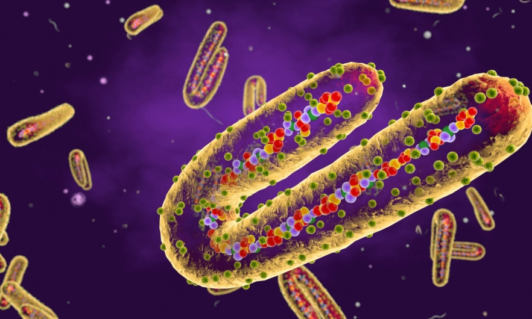

Familia
El virus de Marburgo pertenece a la familia Filoviridae, que también incluye a los ebolavirus. Los filovirus se caracterizan por su forma filamentosa y pleomórfica, que puede ser larga y tubular, o ramificada y en forma de "U".
Leer más